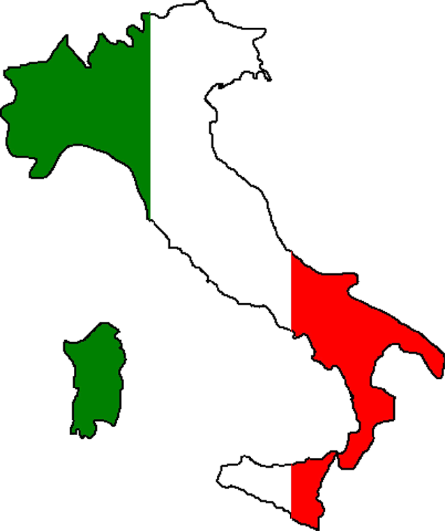
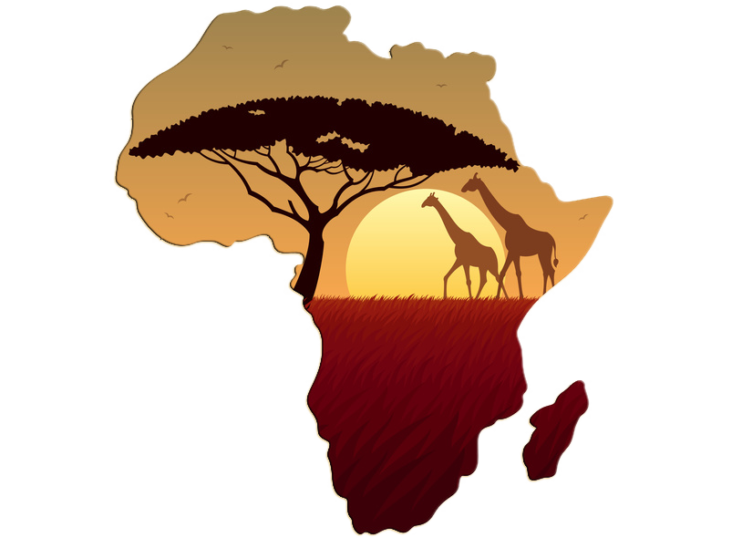
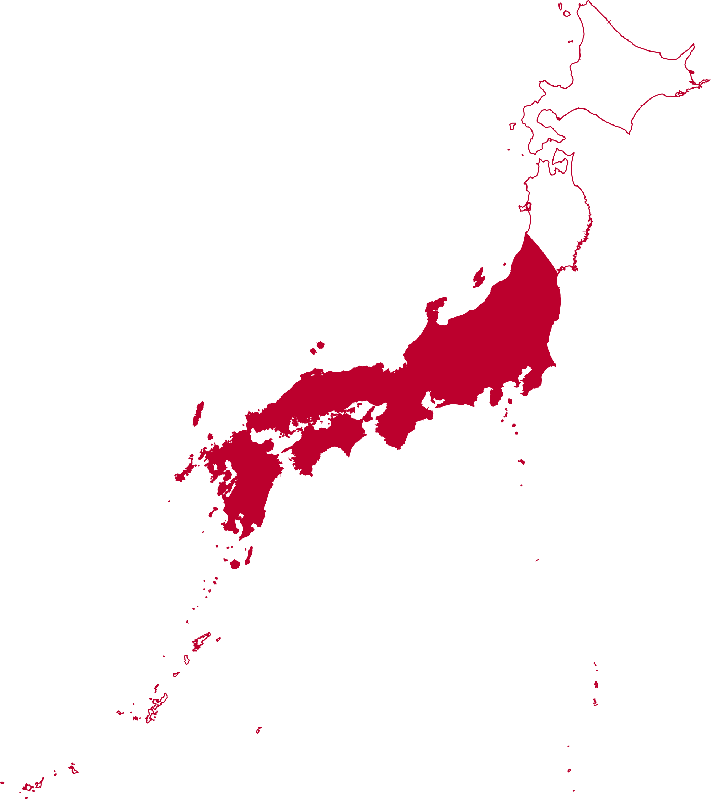

Италия: Страна страсти и искусства.
Италия - это родина великих художников, архитекторов и скульпторов. Здесь вы сможете увидеть шедевры Микеланджело и Рафаэля, прогуляться по живописным улочкам Венеции и Флоренции, попробовать настоящую итальянскую пиццу и пасту, а также насладиться красотой Средиземноморского побережья.
Италия - это страна, которая вдохновляет и очаровывает.
Африка: Континент приключений и контрастов.
Африка - это континент, который поражает своим разнообразием и контрастами. Здесь вы сможете увидеть величественных животных в их естественной среде обитания, познакомиться с уникальными культурами и традициями, насладиться экзотической кухней и насладиться красотой нетронутой природы.
Африка - это место, где можно испытать настоящие приключения и открыть для себя что-то новое.
Китай: Страна древней мудрости и современности.
Китай - это страна, которая сочетает в себе древнюю мудрость и современные технологии. Здесь вы сможете посетить Великую Китайскую стену, полюбоваться на величественные пагоды и храмы, попробовать разнообразные блюда китайской кухни, а также познакомиться с уникальной культурой и традициями.
Китай - это страна, которая поражает своим величием и многообразием.

Япония: Страна восходящего солнца.
Япония - это страна контрастов, где древние традиции гармонично сочетаются с ультрасовременными технологиями. Здесь вы сможете посетить величественные храмы и замки, полюбоваться на цветущую сакуру, насладиться изысканной кухней и окунуться в атмосферу анимации и поп-культуры.
Япония поразит вас своей уникальностью и гостеприимством.
